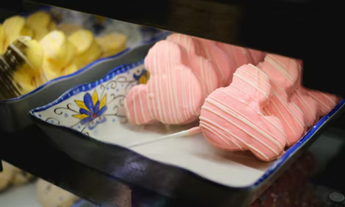
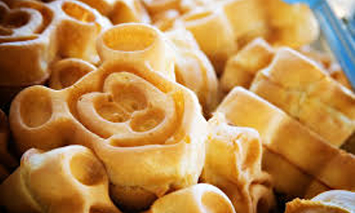
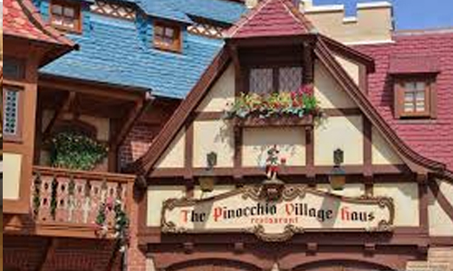
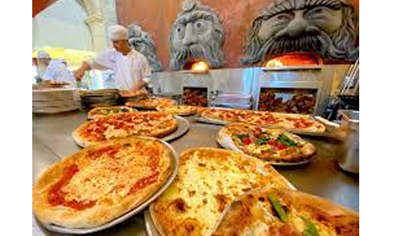

Food
There is a lot of different and delicious food to eat in Walt Disney World. They vary in prices from being really cheap to crazy expensive. You can enjoy foods from around the world in Epcot's World Showcase, dine with princesses and other characters like Mickey and friends, you can enjoy a little snack like churros or donuts, and many other wonderful options.
- Churros - Every Park
- Teppan Edo - Epcot
- Giant Donuts - Every Park
- Via Napoli - Epcot
- Mickey Ice Cream sandwiches and Ice Cream Bars - Every Park
- Flametree Barbeque - Animal Kingdom
- Woody’s Lunchbox - Hollywood Studios
- Backlot Express - Hollywood Studios
- Popcorn - Every Park
- Pinocchio Village Haus - Magic Kingdom